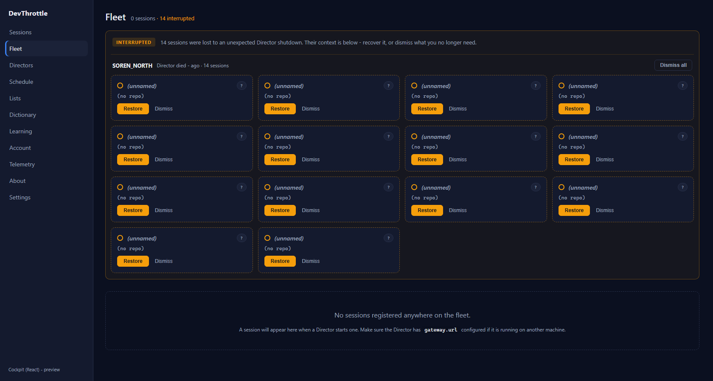
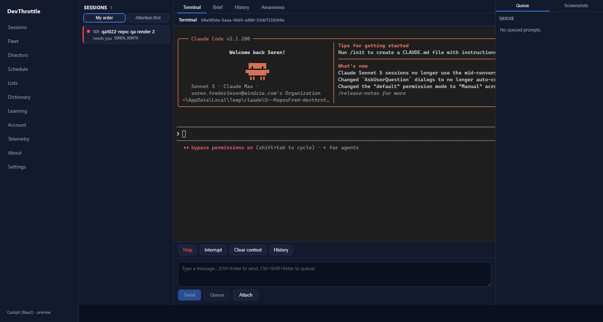
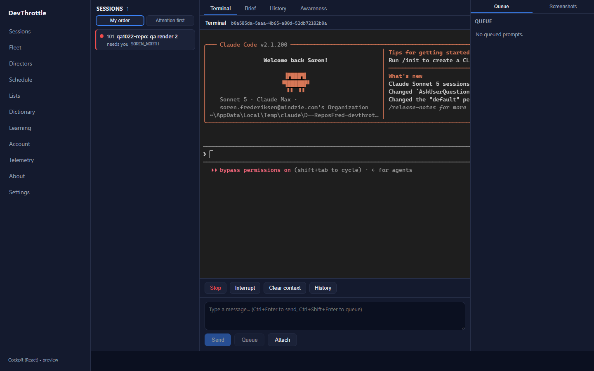
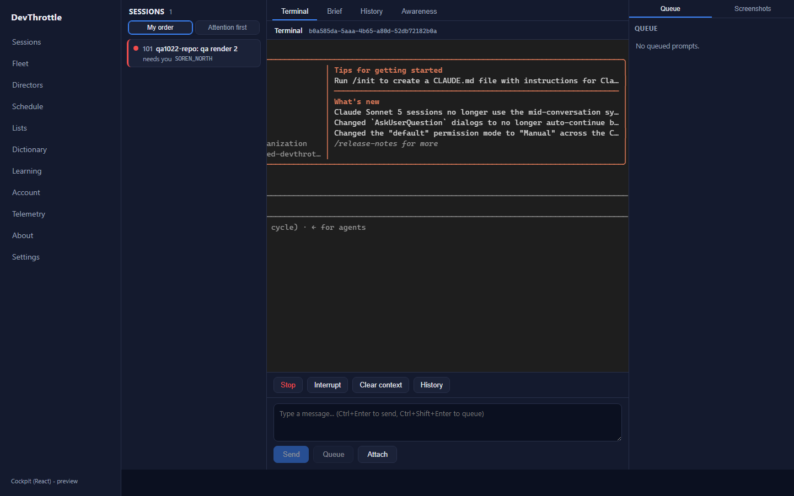
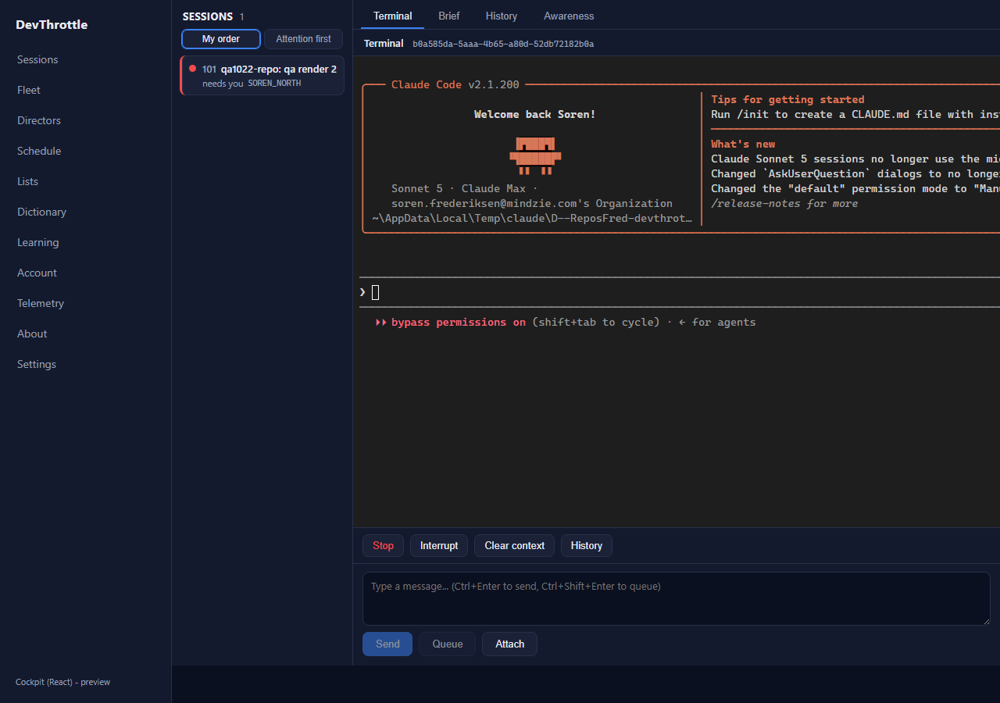

QA Proof - Issue #1022
Independent QA verification (QA Agent, CenCon method). Verified on a QA-owned isolated Director (slot 15, Control API port 7881) with the PR's own Cockpit code, driven live with a real Claude Code session. The Developer report was NOT trusted - every result below was reproduced by QA.
PR #1035 Branch: issue-1022-cockpit-rail-terminal-clip Isolated slot 15 / port 7881
How QA verified
A fresh worktree was checked out on the PR branch. The Director slot 15 was built and launched
through its own scheduled task (never from the agent process tree). A real Claude Code session was
started on it. The PR's Cockpit was run from its own Vite dev server with
COCKPIT_PROXY_TARGET=http://127.0.0.1:7881 so the live terminal WebSocket streamed from
the QA Director. Playwright drove the pages at 1280 / 1440 / 1680px, read the live DOM metrics, and
captured screenshots. This exercised the PR's actual code end to end.
Acceptance criteria - each independently reproduced
| Criterion | Expected | Actual (QA-measured) | Result |
|---|---|---|---|
| No placeholder / scaffold text on any page; right rail gone. | "Turn rail and awareness panes land here." absent everywhere; no .rail-right. |
Live DOM read on the session page, /fleet, and /:
bodyText_hasPlaceholder=false and railRight_present=false on all.
The freshly built bundle contains no rail-right/rail-empty/rail-title. |
PASS |
| At 1280 / 1440 / 1680px the full agent terminal UI is reachable - nothing silently clipped. | Content past the pane edge reachable by horizontal scroll; scrollbar reaches the cut content. | Grid mirrors to 992px. Host width 828 (1280) / 656 (1440) / 896 (1680). At every width
overflow-x:auto and scrollWidth > clientWidth, and scrollLeft
reaches the full extent (992-896=96 at 1680; 992-656=336 at 1440). Scrolling right physically
reveals the previously clipped right border of Claude's welcome box (see screenshots). The
reclaimed ~300px (dead rail removed) means 1680 needs only 96px of scroll. |
PASS |
| No rendering regression - PTY grid mirrored coherently, no ghost-stacked frames / doubled footer. | Exactly one welcome box, one input row, one status line; no duplicated frames. | Every capture shows a single coherent box, single input row, single "bypass permissions on..."
status line. The mirroring engine (interactive.ts) is untouched by this PR (diff is
AppShell.tsx + styles.css only), so no ghosting could be reintroduced -
confirmed visually. |
PASS |
| Terminal status line does not overflow the pane. | The .term-bar-sid session-id line stays inside its bar. |
Live metrics: overflows=false at all widths (clientWidth==scrollWidth==232, the
full GUID ellipsizes inside the flex bar via min-width:0). |
PASS |
| Two-column shell layout intact on every page (no broken layout from removing the rail). | Shell grid is left rail + main pane; main pane owns the full remaining width. | Live grid-template-columns = 220px 1fr (i.e. "220px 1060/1220/1460px")
on the session page, /fleet, and /. Main pane spans the full width; per-page
detail regions (session dock, roster) still render inside the pane. |
PASS |
| Full build gate clean. | All four builds succeed. | cockpit npm run build OK; root npm run lint (eslint .) OK;
dotnet build src/CcDirector.Gateway/CcDirector.Gateway.csproj -p:RunCockpitBuild=true
= Build succeeded, 0 Warning, 0 Error; dotnet build cc-director.sln = Build succeeded,
0 Warning, 0 Error. This PR touches zero .NET source, so no .NET test regression is possible from
the diff. |
PASS |
Screenshots (QA-captured, live session)





Verdict
VERIFIED - all acceptance criteria met. Merging to main.